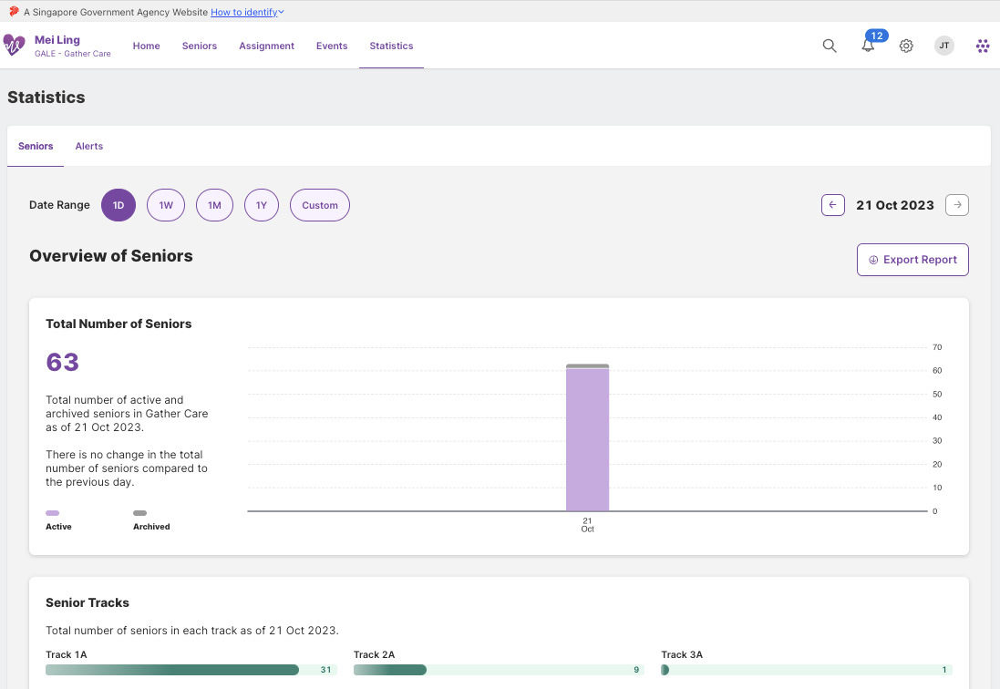
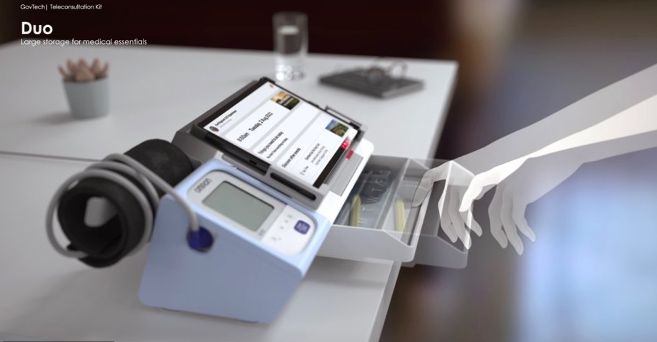

Suite of Solutions
1. Gather Care Admin System
AAC staff, Community Nurses
- Upload events and care plan
- Review health monitoring data collected
- Provide support to residents when needed

2. PALS Tablet
Seniors enrolled into this trial
- View consolidated schedule for the day with reminders
- Discover events and resources
- Have a teleconsult with your primary care provider
- Available in 4 languages(EN/CN/MY/TL)

3. Sensei Care Kit
Seniors enrolled into this trial
Use the health monitoring devices to have the readings automatically synced to PALS for the care team to review
Care Kit Includes:
- Blood Pressure Monitor
- Tablet Mount
- Medication Drawer
- Easy to carry design
